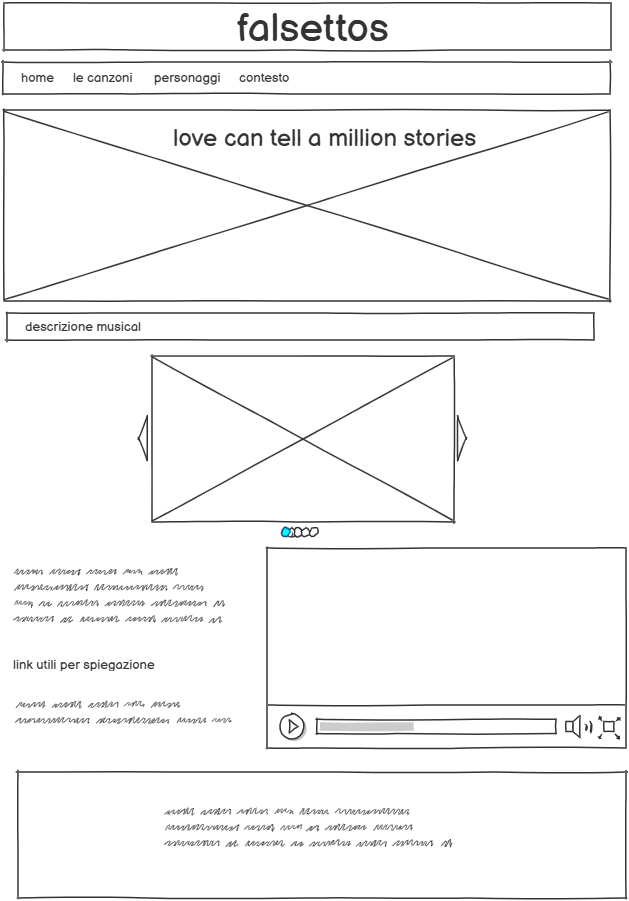
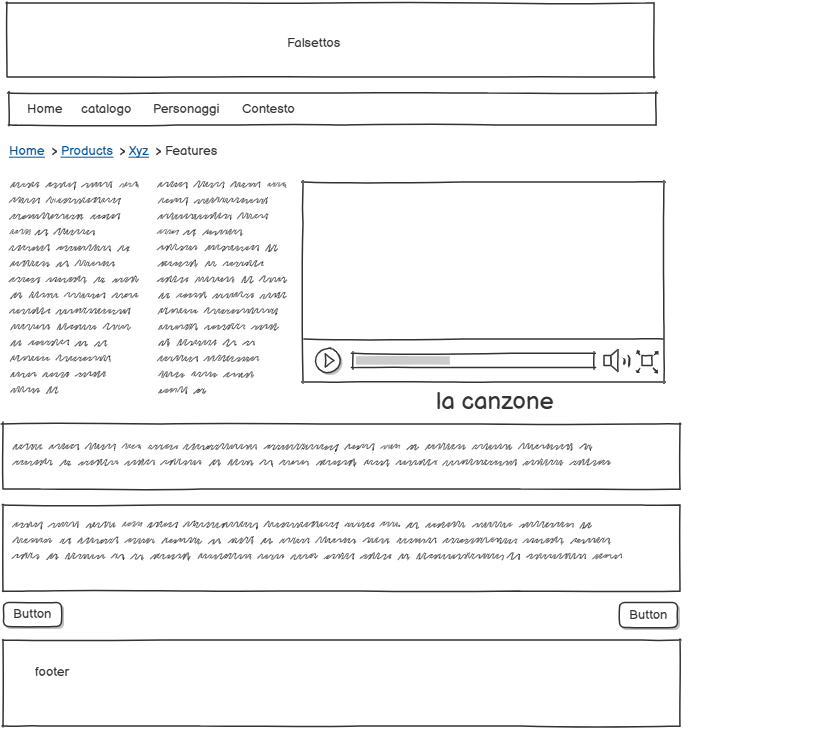
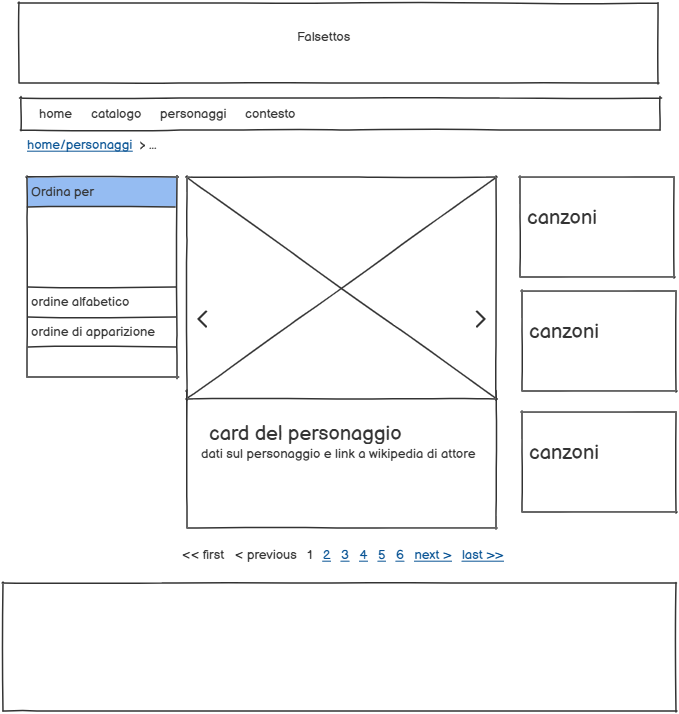
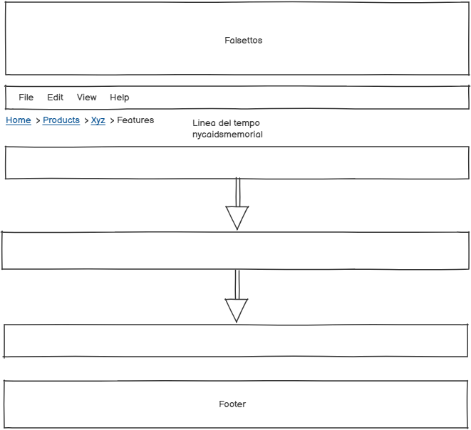

Indice
1. Idea (Abstract)
L'idea è quella di realizzare una pagina di approfondimento sul musical "Falsettos" elencando e analizzando tutte le principali cartteristiche di questo: canzoni, autori, personaggi e contesto storico al quale si ispira. Per ogni canzone saranno presenti dei metadati, il testo tradotto in lingua originale, e il video della performance della canzone stessa, così da poter conoscere al meglio questa produzione, nello specifico la versione del 2016.
2. Brief
2.1 Finalità
Il progetto si occupa di creare un'analisi completa e approfondita sul musical "Falsettos". Sarà preso sotto esame ogni aspetto di una produzione startificata e densa di significati come un musical.
2.2 Pubblico
Il pubblico principale sono gli appassionati di Broadway e Musicals, ma anche chiunque sia interessato alla crisi dell'aids di New York negli anni '80 e a tutti i prodotti artistici, figli di tale periodo. Inoltre il sito è accessibile in ogni suo aspetto a chiunque senza registrazione per permetterne la più totale fruizione.
2.3 Accesso
Il catalogo delle canzoni è basato su testi e video, in questo modo il sito sarà facilmente fruibile su ogni device. Inoltre il foglio CSS è fornito di media query che permettono la responsività di ogni elemento. Lo strumento principale per cui è pensato rimane comunque il personal computer, per permettere un visione dei video più soddisfacente.
2.4 Contenuti e Dati
Le immagini sono state reperite su Playbill.com e ritagliate con l'applicazione Photos per Personal Computer. Come contenuto originale è stato creato il logo utilizzato nel sito come favicon.
3. Benchmark
3.1 Analisi di mercato
Non esistono altri siti che racchiudono un catalogo completo delle canzoni e dei personaggi del musical. Ci sono siti che forniscono un'analisi dettagliata di singoli brani ma non è mai fornito uno sguardo completo e approfondito. Esistono comunque siti che forniscono uno sguardo superficiale ma completo sul musical, la produzione e gli attori.
Uno di questi è https://www.playbill.com, che essendo il sito ufficiale della produzione di broadway fornisce dati molto precisi sugli spettacoli, ma non approfondisce nessun aspetto. Altri sito invece più dettagliato è lct.org/shows/falsettos/whos-whoche è più innovtivo ma più complesso da navigare e comunque approfondisce maggiormente solo l'esposizione degli attori che interpretano i personaggi, senza fornire informazioni in più rispetto ai singoli brani.
Invece un sito che ha componenti e servizi molto interessanti da cui prendere ispirazione è https://www.concordtheatricals.com che comprende un'overview di tutte le informazini principali rigurdanti il musical, collegamenti ad altre opere sugli stessi temi, accesso ad uno store con items riguardanti l'opera, e possibilità di vedere in tempo reale i teatri in cui al momento è in scena Falsettos.
3.2 Descrizione dei concorrenti
I tre siti concorrenti che voglio descrivere sono:
- https://playbill.com/production/falsettos-walter-kerr-theatre-2016-2017
- https://www.lct.org/shows/falsettos/
- https://www.concordtheatricals.com/p/2194/falsettos
Il primo è https://playbill.com/production/falsettos-walter-kerr-theatre-2016-2017. Il sito è gestito da Playbill, che è l'azienda che si occupa della stesura dei libretti di ogni musical che ha luogo a Broadway o Off-Broadway, pertanto è sempre aggiornato e ben strutturato. In alto troviamo la testata di un colore molto acceso dal forte contrasto con lo sfondo, contenente le icone social che rimandano agli altri canali dell'azienda, la navigazione principale, riprodotta anche come sidenav a comparsa, e la possibilità di fare ricerche nel sito. Il contenuto principale è affiancato da un side contenente articoli e ultime notizie connessi al musical. Riguardo al musical viene fornita una sinopsi e le informazioni principali su durata e personaggi. Gli elementi più notevoli di questo sito sono i dati che riesce a fornire, poichè abbiamo gli incassi di ogni produzione negli anni e ogni premio vinto. Inoltre visto che si tratta del sito di Playbill è possibile anche consultare il libretto ufficiale dell'opera. Alla fine della pagina è possibile anche sfogliare varie foto e video. L'ultimo elemento notevole è l'elenco di musical che hanno esordito a broadway nello stesso anno di Falsettos, con il rimando alla pagina di Playbill riguardante ciascuno di questi.
Il secondo sito è quello di https://www.lct.org/shows/falsettos/ che è la pagina del "Lincoln Theatre Center" e pertanto non è esclusivamente realizzata per questo specifico musical. La testata comprende il logo del teatro, seguita da tre livelli di navigazione, in cima troviamo la metanavigazione, subito sotto la navigazone principale riguardante tutto il sito , seguita da quella secondaria dedicata esclusivamente al musical. La testata viene prima di una serie di immagini del musical affiancate dalla locandina. Qui avviene un contrasto di colori spiacevole perchè il colore dominante delle foto dal musical è il blu, mentre il background-color della locandina è di un rosso opacizzato, che crea un effetto spiacevole. Tutta la pagina ha un side element sticky che fornisce i nomi del cast, le info sugli altri canali social, e i link ad interviste con gli autori. Il main element comprende un abstract del musical, un video introduttivo e degli articoli correlati. L'elemento più interessante di questo sito è sicuramente l'incastro molto ben strutturato del layout tra carousel, sidenav e testata, che va a creare una facciata molto dinamica e stratificata, col rischio che risulti troppo complicata a prima vista. Il footer è molto semplice e contiene la possibilità di iscriversi alla newsletter, i contatti e ancora, gli altri canali social. Il colore del footer richiama quello della testata.
Il terzo sito è https://www.concordtheatricals.com/p/2194/falsettos che è quello più completo e interessante, sotto ogni punto di vista. La testata comprende la navigazione principale e la possibiltà di fare ricerche per titolo, keyword o autore. I colori sono tutti ben coordinati, puntando sull'accostamento per analogia, con alcuni elementi di forte contrasto. Viene poi fornita un'overview generale sull'opera che comprende anche la trama e la storia della sua produzione. Seguono poi vari elementi interessanti di analisi. Prima di tutto la possiilià di navigare tramite keywords, che collega così il musical ad altre opere simili. Segue poi una sezione sugli articoli di giornale correlati, con video e foto dai vari cast. Segue poi un collegamento a spotify con la possibilità di riprodurre i brani, con a fianco una descrizione di varie caratteristiche della musica. Alla fine è presente una mappa con le località in cui al momento è presentata l'opera, e un collegamento ad uno shop su cui poter acquistare i copioni delle varie versioni. Il footer comprende una metanavigazione, la possiblità di creare un account, i contatti e gli altri canali social. Il sito è responsivo, molto innovativo e aggiornato, inoltre fornisce molte informazioni peculiari riguardo al musical.
4. Struttura
4.1 Mappa concettuale
L'idea generale è quella di voler fornire uno sguardo completo su tutti gli aspetti che compongono questo musical. Le categorie principali in cui si può suddividere sono gli elementi strutturali, quindi gli autori, gli anni di produzione e i luoghi di produzione. A livello di contenuti poi l'opera si divide nelle categorie principali di personaggi e canzoni. L'ultimo tema importante è l'ambientazione del musical, che è il collegamento principale ad eventi realmente accaduti.
4.2 Schema delle dipendenze
In questo schema delle dipendenze troviamo in cima la homepage, che contiene elementi descrittivi generali, vari link di connessione a pagine esterne e la navigazione principale. Al secondo livello troviamo le pagine di navigazione principale e i link che ho differenziato con un contenitore di forma differente dalle altre pagine. Al terzo livello troviamo invece la scheda del singolo item alla quale si può accedere tramite la pagina del catalogo o delle schede dei personaggi, e la linea del tempo degli eventi realmente accaduti, alla quale si può accedere solo tramite il dropdown button della nav pincipale. Sempre al terzo livello troviamo due collegamenti a pagine esterne sempre accessibili tramite dropdown button della topnav, che ho deciso di differenziare tramite la forma del contenitore.
La pagina Catalogo è il catalogo principale delle canzoni presenti nel musical nella quale è possibile visualizzare un elenco completo in ordine cronologico dei brani. La Pagina dei personaggi presenta una serie di schede che descrivono nei dettagli ogni partecipante all'opera, entrambe queste pagine rimandano alla scheda della singola canzone. Il dropdown button rimanda a tre differenti pagine: Linea del tempo, Storymap degli eventi e un articolo correlato.
All'ultimo livello troviamo la scheda della singola canzone, nella quale è possibile approfondire vari aspetti di ogni brano, ascoltarlo e vedere il testo in lingua originale e tradotto. Allo stesso livello troviamo la linea del tempo degli eventi principali avvenuti realmente durante la crisi dell'aids degli anni '80 a New York, una story map riguardante gli stessi eventi, e un approfondimento esterno su come l'arte abbia rappresentato tale crisi
4.3 Categorie Descrittive
Di seguito sono riportate le possibili categorie descrittive di un brano del catalogo, in particolare il pezzo "the thrill of first love"
-
Titolo: The thrill of first love
-
Autori: William Finn e James Lapine
-
Descrizione: La simpatica esposizione contrastante e tormentata di un amore disfunzionale tra i due protagonisti
-
Soggetto : Marvin e Whizzer
-
Publisher: Off-Broadway
-
Data: 1992
-
Tipo: Canzone
-
Lingua: Inglese
5. Layout
5.1 Wireframe index
Questo è il wireframe della pagina home. Dal punto di vista dell'archittettura troviamo un header con il solo il titolo, che è un link alla home, seguito da una navigazione principale formata da 4 elementi, uno dei quali è un dropdown che permette di accedere ad altre pagine. Scendendo troviamo il main che è diviso in più fasce. La prima è un'immagine con un button che permette di vedere il musical per intero, subito sotto troviamo una prima breve introduzione testuale. La terza sezione è composta da un carousel di immagini del cast in scena, l'ultima delle quali contiene i link per accedere poi alle schede dei singoli personaggi. L'ultima sezione è divisa tra video introduttivo e paragrafi di testo che espongono vari aspetti dell'opera, e permettono di approfondirne l'analisi tramite il collegamento a video-analisi di youtube.
In fondo troviamo il footer con il copyright, i vari collegamenti ai social, e i link di metanavigazione.
5.2 Wireframe catalogo

Questo è il wireframe del catalogo in cui possiamo trovare i vari item e ordinarli. Nella testata del sito troviamo il titolo e poco sotto la navbar in cui il canale del catalogo è evidenziato. Nel corpo del documento possiamo trovare le breadcrumbs che permettono di tornare alla home.
Il corpo è diviso in due sezioni: in quella a sinistra troviamo un accordion con 3 item che permette di filtrare le varie canzoni. L'accordion è stato celto anche per facilitare la modalità di visualizzazione su altri dispositivi, visto che i filtri sono numerosi. Le categorie principali sono tre e sono: Chi canta le canzoni, Che ruolo hanno all'interno della crescita del personaggio, e In che tonalità sono realizzate
Nella sezione a destra troviamo le canzoni raggruppate in due tabs, uno per il primo e uno per il secondo atto, che definiscono l'ordine di visualizzazione. La visualizzazione delle canzoni è divisa in due colonne per facilitare la visualizzazione su tutti i dispositivi. Ogni card contiene gli elementi elencati nell'accordion laterale. Alla fine di ogni tab troviamo un sistema di pagination per poter scorrere il catalogo. In fondo troviamo il footer con la metanavigazione e il copyright.
5.3 Wireframe item
Questo è il wireframe della scheda dell'item. Nella testata troviamo, come nella home e nei wireframe precedenti, Il titolo in alto e la navbar per la navigazione primaria. Poco sotto ci sono le breadcrumbs che permettono all'utente di orientarsi e sono completamente navigabili.
Nel corpo del documento troviamo tre fasce principali. Nella prima sono affiancate al video della signola canzone, due colonne di testo, una in lingua originale e una tradotta. E' possibile scorrere il testo della canzone e vederla interamente grazie al link di rimando in fondo al testo. Nella seconda fascia troviamo una descrizione della dinamica che ha luogo durante l'esecuzione di questo brano, mentre nella terza e ultima fascia troviamo uno star-rating e metadati descrittivi del brano. Sul fondo troviamo sempre il footer con il copyright, i social e la metanavigazione.
5.4 Wireframe Raccolta Personaggi
Qui abbiamo il wireframe per il layout della raccolta dei personaggi. Nella testata abbiamo sempre il titolo e la navigazione principale, la navbar e il bradcrumb.
Il corpo del documento è suddiviso tra Filtri di ricerca e schede del personaggio. A sinistra troviamo un accordion che richiama quello della pagina di catalogo delle canzoni , che permette di filtrare i personaggi da vedere, che in ogni caso appariranno sempre come cards da scorrere grazie ad un carousel. In ogni scheda del personaggio sarà presente una foto del personaggio, e una sua descrizione, inoltre saranno presenti collegamenti esterni all'attore e ad altre sua comparse in opere differenti. In fondo alla pagina sarà sempre presente il footer con copyright, metanavigazione e pulsanti social
5.5 Wireframe Linea del tempo
Nel Wireframe della Scheda contenente la linea del tempo è presente sempre la testata contenente titolo e navbar. Il sottotitolo è un link che rimanda alla pagina dalla quale sono state prese le informazioni.
6. Usabilità
Norme di usabilità per l'archittettura
Dal punto di vista dell'architettura Ho deciso che la navbar sia sticky, cioè che rimanga sempre in cima alla pagina anche se si scorre fino in fondo, in modo che sia sempre facile tornare alla home. Inoltre il titolo nella testata è un link che riporta alla pagina iniziale. In ogni pagina, esclusa la home, sono presenti le bradcrumbs per tornare facilmente indietro e facilitare l'esperienza di navigazione. La pagina in cui ci si trova è sempre evidenziata nella navbar. Il footer resta sempre in fondo alla pagina e non è sempre visibile, contiene la metanavigazione e il link per visualizzar il web project plan.
Tutte le pagine sono organizzate con una suddivisione in sezioni o fasce sempre visibili e riconoscibili, e ognuna riguarda un contenuto. La pagina di catalogo in particolare è divisa tra la navigazione secondaria che permette di filtrare le canzoni secondo criteri differenti, e la visualizzazione dei brani
Le pagine sui singoli item sono organizzate in più fasce, una iniziale di visualizzazione della canzone, che affianca il testo al video, permettendo all'utente di seguirla più facilmente durante l'ascolto. Troviamo poi i metadati di ogni singola canzone che sono link interni al sito, e rimandano quindi ad altre pagine presenti nel sito, oppure lin esterni, e rimandano ad altre pagine di approfondimento di quale categoria.
Tutto il sito è completamente responsivo grazie ai media quaery elencati sul foglio css. La navigazione secondaria della navbar si attiva semplicemente al passaggio del mouse sopra il bottone dropdown, evidenziato da un'icona esplicativa. Il sito è diviso il row e columns, in particolare la pagina del singolo item, sfruttando la proprietà flexbox di css, che permette una comoda visualizzazioen da ogni dispositivo. Inoltre sono presenti bottoni e sistemi di navigazione che facilitano la fruibilità del sito.
Norme di usabilità per l'aspetto e la tipografia
Per quanto riguarda l'aspetto tipografico del sito ho optato per uno stile semplice in modo da rendere i testi fruibili agli utenti di qualsiasi età. Il font utilizzato è l'Arial Helvetica per il body e i testi sono di due colori, bianchi se si trovano su sfondo rosso, e rossi se si trovano su sfondo bianco o grigio chiaro. Per l'header ho scelto il font DM serif display, perchè richiama chiaramente la locandina originale dell'opera. Gli elementi da enfatizzare sono stati evidenziati col tag strong. Ho reso i link riconoscibili solo al passaggio del mouse, che fa sì che ci sia una sottolineatura, altrimenti si integrano pienamente col testo.
Norme di usabilità per colori, font e icone
I colori scelti sono il rosso scuro, il bianco e il grigio colori che hanno tra loro un buon contrasto, notevole ma non stridente.Le gradazioni sono state scelte tramite uno strumento online: https://www.toptal.com/designers/colourcode che mi ha permesso di scegliere gradazioni di rosso vicine tra loro. Il font scelto è uno dei font sicuri ed è stato selezionato dalla libreria di google fonts.I bottoni cambiano tutti colore al passaggio del mouse sopra questi, per evidenziarne al massimo la funzione. Tutti gli elementi del sito sono inoltre raggruppati in box con sfondo di colore diverso tra loro, in modo da facilitare a prima vista la suddivisione del documento in fasce differenti. Il rosso come sfondo è stato utilizzato principalmente per header, footer ,e testi. Il grigio invece fa principalmente da sfondo agli altri elementi. Lo sfondo è comunque sempre bianco, per contrastare.
7. Servizi
7.1 Sistemi di browsing per valorizzare
Nella sezione catalogo e nella home sono già presenti alcuni sistemi di browsing tra cui: Accordion con filtri per chi canta, che ruolo la canzone ha e in che tonalità le canzoni sono. Inoltre le canzoni sono già suddivise in ordine cronologico. Si potrebbe implementare il browsing aggiungendo un filtro per ordine alfabetico, o tramite le parole maggiormente presenti all'interno di ogni testo. Ho creato una linea del tempo per gli eventi che si sono svolti nel mondo reale nel lasso di tempo raccontato dal musical, ma si potrebbe creare una linea del tempo che segua solo la narrazione ed esponga in maniera più interattiva le canzoni in ordine cronologico, affiancandole magari ai fatti della storia.
7.2 Utilities e tool per l'interazione
Nel sito come strumenti e utilities per l'interazione al momento sono implementati:
- Bottoni: nel sito sono presenti dei bottoni che nel momento in cui l'utente ci passa sopra con il mouse cambia colore rendendo evidente la sua funzione
- Accordion: nella pagina del catalogo troviamo un accordion, usati per nascondere i vari filtri di browsing del catalogo delle canzoni. Inoltre il collasso dell'accordion facilita la visualizzazione nche sui dispositivi mobili
- Card: questo strumento viene utilizzato per raccogliere le varie canzoni nella pagina dedicata al catalogo, e contiene gli elementi richiamati dai filtri dell'accordion. Tutte le card hanno un link che manda alla scheda dettagliata della canzone
- Tooltips: i tooltips sono presenti in tutti i link del sito e appaiono in hover per spiegare all'utente cosa succede al click.
- Dropdown: Ho utilizzato un bottone dropdown nella navbar per aprire la navigazione secondaria.
- Carousel: nella pagina home Ho utilizzato un carosello di immagini che mostrano i vari personaggi del musical. Una delle immagini contiene anche i link per arrivare alla scheda del singolo personaggio.
- Pagination: nella pagina catalogo è presente un sistema di pagination per poter scorrere tra le varie facciate della tab contenente l'elenco generale delle canzoni.
- Sticky Navbar: la navbar del sito ha la proprietà sticky-top cioè quando si scorre rimane incollata al parte superiore della schermata così da averla sempre visibile.
- Tabs: Le Tabs sono presenti nella pagina di catalogo delle canzoni e le suddividono cronologicamente in canzoni cantate nel primo atto e canzoni cantate nel secondo, in questo modo cliccando l'utente può navigare più facilmente tra i brani
7.3 Strumenti, servizi, tool e metodi aggiuntivi
Dentro al sito sono inclusi come servizi e tool aggiuntivi: le integrazioni social di ShareThis che permettono di raggiungere le pagine social direttamente e inserire elementi per la condivisione, una storymap creata con Knightlab che permette di esplorare i luoghi e le vicende realmente svoltasi in quegli stessi anni, una linea del tempo creata con Freefontend che segue le vicende della crisi, e un'image map che permette di arrivare direttamente alle schede dei personaggi cliccando sopra una foto che li raffigura tutti insieme. Si potrebbe aggiungere uno strumento di ricerca tramite parole presenti nei testi con Tagcloud, che renderebbe più di impatto la componente testuale dell'opera. Inoltre sarebbe interessante riuscire ad includere nella scheda delle canzoni gli spartiti, per includere nella target audience anche musicisti interessati a studiarne la composizione.
8. Bibliografia
Software e web application utilizzati:
- Mappa interattiva realizzata con StoryMapJS di Knightlab: https://storymap.knightlab.com/
- Wireframes realizzati con Balsamiq Wireframes: https://balsamiq.com/
- Mappa concettuale e schema delle dipendenze realizzati con Drawio.com: https://www.drawio.com/
- Sito pubblicato con Github Pages: https://pages.github.com/
- Integrazione social realizzata con ShareThis: https://platform.sharethis.com/
- Image Map realizzata con Imagemap.net: https://www.drawio.com/
- Linea del tempo realizzata con Freefontend.com: https://freefrontend.com/
- Favicon realizzato con Favicon.io: https://favicon.io/
Testi e Immagini:
- Immagini prese da Google immagini e dal sito di Playbill: https://playbill.com/
- Testi prodotti da me e controllati su Wikipedia: https://it.wikipedia.org/wiki/Falsettos
Codice:
Uso delle varie sezioni di HowTO di W3School.